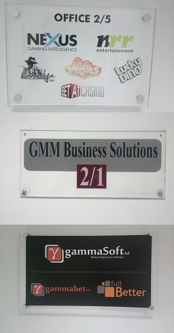

Europejskie Las Vegas
Pamiętacie Polaka skazanego za zdjęcie z ruletką? Nie ma się co dziwić, skoro sam Donald Tusk vel Słońce Peru zapowiedział „walkę z twardym hazardem”. Na szczęście na Malcie politycy maja więcej zdrowego rozsądku. Na tyle dużo, by nie uważać hazardu za zło wcielone i nie stwarzać sztucznych barier dla tej gałęzi przemysłu.
To nie przypadek że ostatnie zawody European Poker Tour (te w których wygrał Dominik Pańka) odbyły się właśnie na Malcie. Ja pracuję na Malcie w jednym z biurowców. Ot, przeciętny budynek, w którym pomieszczenia wynajmowane są przez różne firmy. Po wjechaniu windą na piętro na którym pracuję wchodzimy do korytarza z kilkoma drzwiami prowadzącymi do różnych firm. Obok większości drzwi znajdują się tabliczki:

Jak widać, tylko jedna firma wygląda na niezwiązaną z hazardem, ale to tylko pozory. Na moim piętrze wszystkie firmy (co do jednej!) są związane z hazardem. Oczywiście to tylko jedno piętro jednego biurowca. Na Malcie jest tego znacznie, znacznie więcej.
Pewnie polscy rządzący doznaliby szoku, gdyby usłyszeli, że pomimo tego iż hazard na Malcie zabroniony nie jest, ludzie żyją tu normalnie i nie wyglądają na spłukanych utracjuszy czekających do wypłaty, żeby „się odkuć”.
Malta jest już w zasadzie europejskim Las Vegas, ale bez neonów i pięknych kasyn. To Las Vegas XXI wieku, w którym rolę neonów pełnią światłowody, a rolę krupierów serwery w klimatyzowanych pomieszczeniach.
Jak to się stało, że ten maleńki kraj ()tysiąc razy mniejszy od Polski) zdołał przyciągnąć tak wiele firm z tej branży? Co obiecał tym firmom? Jakie korzyści? W zasadzie niewiele, powiedział im tylko „będziemy zabierać Wam mniej”.
Podatek dochodowy od zagranicznych firm wynosi de facto jedynie 5% od zysków (w Polsce 19%).Podatek od wygranej np. w pokera: 5% (w Polsce 25%).
Oczywiście żaden szanujący się kraj Unii Europejskiej w tym także i Malta nie może się obyć bez przepisów krępujących nieco wolną przedsiębiorczość. Malta posiada cały szereg przepisów związanych z hazardem jak np. konieczność dublowania serwerów, backupy w razie awarii itp. Na hazard trzeba również mieć odpowiednią licencję. Jak tłumaczył mi znajomy księgowy w dużej mierze jest to podyktowane tym, żeby ugłaskać Unię Europejską. W końcu wszyscy wiemy jak oni lubią nadmiar regulacji. Maltańczycy też się już na nich poznali.
Jak wszyscy wiemy Malta czerpie spore przychody z turystyki. W końcu grzechem byłoby nie wykorzystać warunków naturalnych takich jak wspaniała pogoda, ciepłe morze i budowle starsze od egipskich piramid.
Okazuje się jednak, że turystyka to zaledwie kilkanaście procent PKB Malty. Od warunków naturalnych niemniej ważne są te sztuczne, te które my ludzie sami sobie stwarzamy. Tak jak słońce sprzyja turystyce, tak w miarę proste prawo i niskie podatki sprzyjają innym gałęziom gospodarki Malty. Nie w każdej dziedzinie Malta ma tak niskie podatki, ma też problemy z biurokracją, ale przynajmniej idzie w dobrą stronę i obniża podatki, a przykład hazardu jest najlepszym dowodem, że to się opłaca.